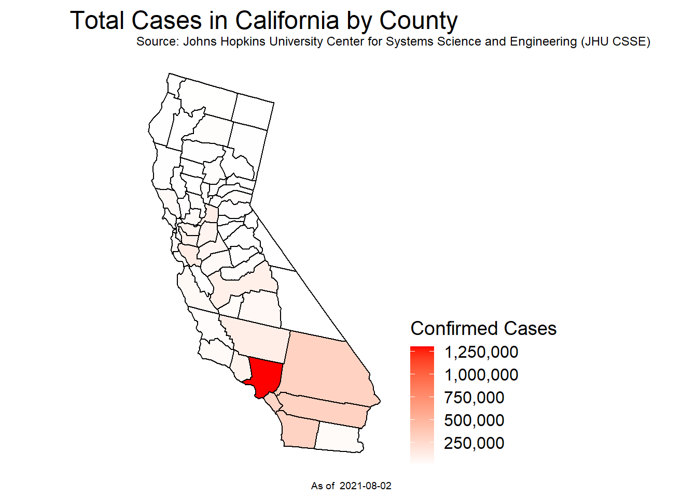
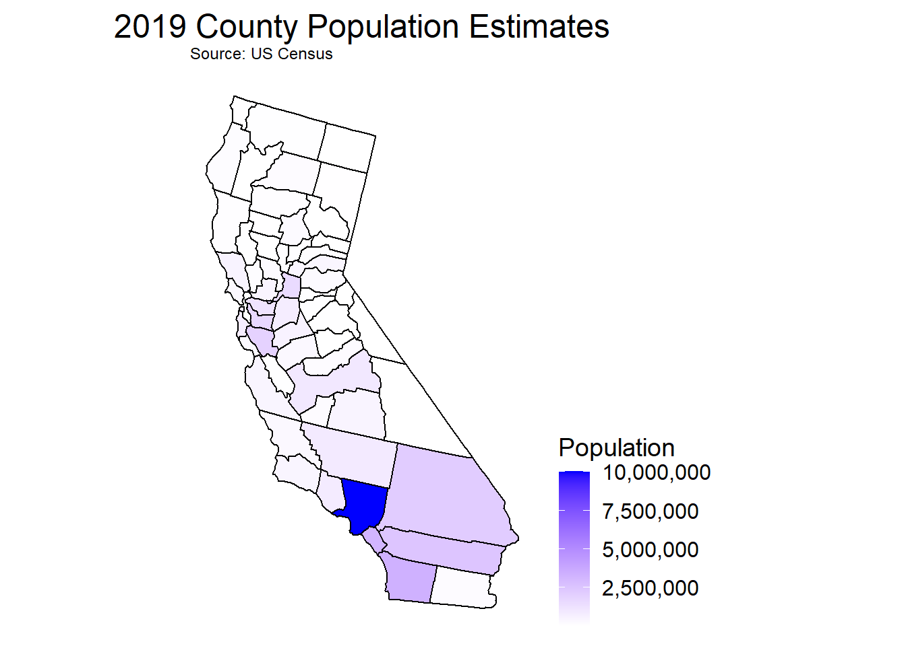

With the recent events of covid cases on the rise and steadly holding just barely and with the rise of fires all over California with the sky being orange miles away from the fire for days, this year has definitely been so unusual and unprecedented times. The Corona virus has been found to inhibit respiratory functions of the host and with the recent fires the air quality within many cities of the 58 counties has sky rocketed to concerning levels. Depending on someone’s geographical location and which county they live in, their health could already be at risk due to the air quality alone. Would this make a subject more vulnerable to contracting covid if their respiratory function was already inhibited? My hypothesis that I want to further explore is whether there is an association between air quality and confirmed cases of covid amongst people within the counties of California.
download.file("https://raw.githubusercontent.com/CSSEGISandData/COVID-19/master/csse_covid_19_data/csse_covid_19_time_series/time_series_covid19_confirmed_US.csv", "time_series_covid19_confirmed_US.csv", method="libcurl", timeout = 60)
covidGithub <- data.table::fread("time_series_covid19_confirmed_US.csv")# Time series visual of incidence cases from the start of the pandemic
p1<-ggplot(covidGithubmelt, aes(Date, new_cases, color = county))+
geom_line()+
geom_point(size = .5, alpha = 0.5)+
labs(title = 'Incidences of Covid Cases in California by County', y = 'New Cases', color = 'County')
ggplotly(p1, width = 800)incidence <- plot_usmap(data = mapdf, values='new_cases', include = 'CA')+
scale_fill_continuous(low = 'white', high = 'red', name = 'Confirmed Cases', label = scales::comma)+
labs(title = 'Incidence Cases by California County',
subtitle = 'Source: Johns Hopkins University Center for Systems Science and Engineering (JHU CSSE)',
caption = paste('As of ', as.Date(max(mapdf$Date))))+
theme(plot.title = element_text(hjust = 0.5, vjust = 0.25, size = 18), legend.position = "right",
legend.title = element_text(size = 14), legend.text = element_text(size = 12))prevalence <- plot_usmap(data = mapdf, values='Confirmed', include = 'CA')+
scale_fill_continuous(low = 'white', high = 'red', name = 'Confirmed Cases', label = scales::comma)+
labs(title = 'Total Cases in California by County',
subtitle = 'Source: Johns Hopkins University Center for Systems Science and Engineering (JHU CSSE)',
caption = paste('As of ', as.Date(max(mapdf$Date))))+
theme(plot.title = element_text(hjust = 0.5, vjust = 0.25, size = 18), legend.position = "right",
legend.title = element_text(size = 14), legend.text = element_text(size = 12))# Hover info of county FIPS code and covid cases within the county from the max date
ggplotly(incidence, width = 800)# Grand total of covid cases at the start of the pandemic
# until the max date being the day before
prevalence
CAcensus <- read_csv("data/cc-est2019-alldata-06.csv")plot_usmap(data = Popmapdf, values='TOT_POP', include = 'CA')+
scale_fill_continuous(low = 'white', high = 'blue', name = 'Population', label = scales::comma)+
labs(title = '2019 County Population Estimates', subtitle = 'Source: US Census')+
theme(plot.title = element_text(hjust = 0.5, vjust = 0.25, size = 18), legend.position = "right",
legend.title = element_text(size = 14), legend.text = element_text(size = 12))
# Visual of how county population influences covid cases
cvd_pop%>%
plot_ly(x = ~TOT_POP, y = ~Confirmed,
type = 'scatter', mode = 'markers', color = ~county,
size = ~TOT_POP, sizes = c(5, 70), marker = list(sizemode='diameter', opacity=0.5),
hoverinfo = 'text',
text = ~paste( paste(county, ":", sep=""), paste(" Cases per 100k: ", per100k, sep=""),
paste(' Population: ', TOT_POP, sep=""), sep = "<br>"),
width = 800)%>%
layout(title = "Covid Cases vs Population of Each County",
yaxis = list(title = "Cases per 100k"), xaxis = list(title = "Population"))# Daily AQI for every county in California
csvAQI_data <- read_csv("data/ad_viz_plotval_data.csv")# Averaged AQI for each county
AQI%>%
plot_ly(x = ~COUNTY, y = ~MeanAQI, type = 'box', color = ~COUNTY, width = 750)%>%
layout(title = 'Air Quality by California County', yaxis = list(title = 'AQI Value'),
xaxis = list(title = 'County'), showlegend = FALSE)# Stacked visuals of both AQI over covid cases during the pandemic
# Air Quality over course of the pandemic
line <- AQI%>%
filter(COUNTY == 'Los Angeles')%>%
plot_ly(x = ~Date, y = ~MeanAQI, type = 'scatter', mode = 'line',
hoverinfo = 'text',
text = ~paste( paste(COUNTY, ":", sep=""), paste(' Date: ', Date, sep = ''),
paste(' Avg AQI: ', MeanAQI, sep=""), sep = "<br>"), width = 800)%>%
layout(title = 'Los Angeles County', yaxis = list(title = 'AQI Value'),
xaxis = list(title = 'Date'))
# Incidences of covid cases over time
line2 <- covidGithubmelt%>%
filter(county == 'Los Angeles')%>%
plot_ly(x = ~Date, y = ~new_cases, type = 'scatter', mode = 'line',
hoverinfo = 'text',
text = ~paste( paste(county, ':', sep = ''), paste(' Date: ', Date, sep = ''),
paste(' New Cases: ', new_cases, sep = ''), sep='<br>'), width = 800)
time_series <- subplot(line, line2, nrows = 2, shareX = TRUE)
time_series# Incidence Rate of Covid Cases Normalized by County Population
attack_rate <- plot_usmap(data = map_merge, values='ratePer1k', include = 'CA')+
#scale_fill_distiller(type = 'qual',palette = 'YlOrRd')+
scale_fill_continuous(low = 'white', high = 'red', name = 'Cases Per 1K Persons')+
labs(title = 'Attack Rate of Covid Cases',
caption = paste('As of ', as.Date(max(mapdf$Date))))+
theme(plot.title = element_text(hjust = 0.5, vjust = 0.25, size = 18), legend.position = "right",
legend.title = element_text(size = 14), legend.text = element_text(size = 12))
ggplotly(attack_rate, width = 800)